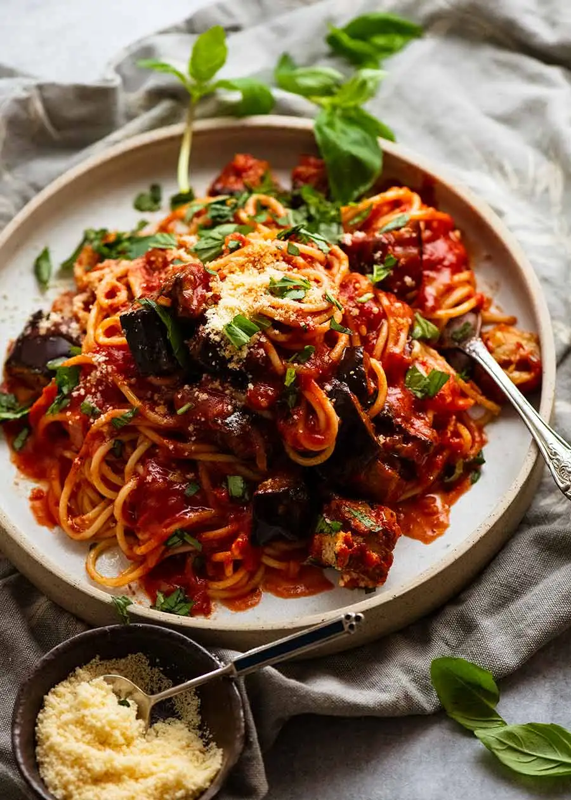

"Eggplant Pasta"

Eggplant Pasta
This recipe for Eggplant Pasta has been in my rotation for a while now. It is a great
recipe for those nights where you don't know what you want to make. It is a quick dish that never dissapoints.
It is traditionally fried in oil but you do have a choice of baking it. Personally I prefer the
fried version but either way you won't be dissapointed.
Ingredients
- Pasta
- Tomato Passata
- White Wine
- Garlic and Onion
- Italian Herb Mix or Oregano
- Chilli flakes
- Basil
Steps
- Preheat oven to 450 degrees. Line a tray with baking / parchment paper.
- Toss eggplant with oil, salt and pepper. Spread on the tray and roast for
20 minutes.
- Flip, then roast for a further 5 minutes. Cool on tray(this helps the eggplant
hold its shape when tossing).
- In a large pot bring pasta to a boil. Make sure to salt the water like the sea. Cook
until Al Dente.
Sauce:
- Heat oil in a very large skillet over medium heat. Add garlic, cook for 20 seconds until
golden, then add onion and cook for 2 to 3 minutes until translucent and cooked through.
- Increase heat to medium-high and add wine, if using. Let it simmer, scraping the base of the pan
to deglaze, until wine mostly evaporates.
- Add tomato passata. Now pour the water into the passata bottle and shake to get the rest of it.
- Add dried herbs, red pepper flakes, salt and pepper. Stir and simmer 5 minutes.
- Stir in eggplant, then add cooked and drained pasta. Gently toss until pasta is coated in the sauce
- Serve immediately, garnished with a good pinch of fresh basil and parmesan.